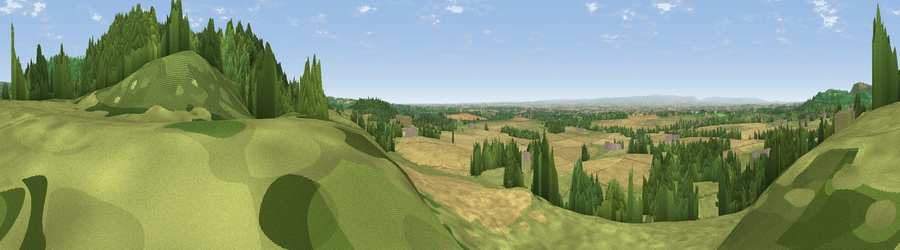

Viewpoint near Kilburn
#6170 in England · top 17% of its area beats it · near KilburnThe view, rendered

A 360° render of this exact spot computed from the terrain model, tree cover and land cover — summer colours, afternoon light, calibrated against photographs of famous viewpoints. Real trees, hedges and buildings will differ in detail.
The panorama
Grey silhouette: terrain skyline in each direction (720 bearings, Earth curvature and refraction included). Dashed green: skyline with trees (+15 m) and buildings (+8 m) as obstacles. Blue strip: how far the ground is visible on each bearing.
Where the view opens
Wedge length = distance to the farthest visible ground on that bearing (vegetation-aware). Rings at 10, 25 and 50 km.
What fills the view
40% grassland · 34% cropland · 23% woodland · 2% built-up
Angular shares of the visible panorama (visual magnitude), not map area. Landscape diversity 0.50 (0–1 Shannon).
Key numbers
More beautiful places nearby
The staircase of upgrades: each row has a higher view potential than everything closer. Driving times are estimates from straight-line distance, calibrated against real road routing — check an actual route before setting out.
| Place | Direction | Drive | Score |
|---|---|---|---|
| Hood Hill | ENE · 1 km | ~3 min | 79.6 |
| Viewpoint near Thirlby | NNE · 3 km | ~7 min | 81.5 |
| Beacon Hill | N · 19 km | ~33 min | 84.7 |
| Carlton Bank | N · 22 km | ~37 min | 85.1 |
| Roseberry Topping | NNE · 33 km | ~51 min | 85.8 |
| Viewpoint near Lazenby | NNE · 38 km | ~57 min | 86.4 |
| Warsett Hill | NNE · 45 km | ~65 min | 86.8 |
| Viewpoint near Easington | NNE · 46 km | ~67 min | 90.2 |
54.21952, -1.24121 · source: screening · position refined by local search. Computed location — check access rights before visiting.